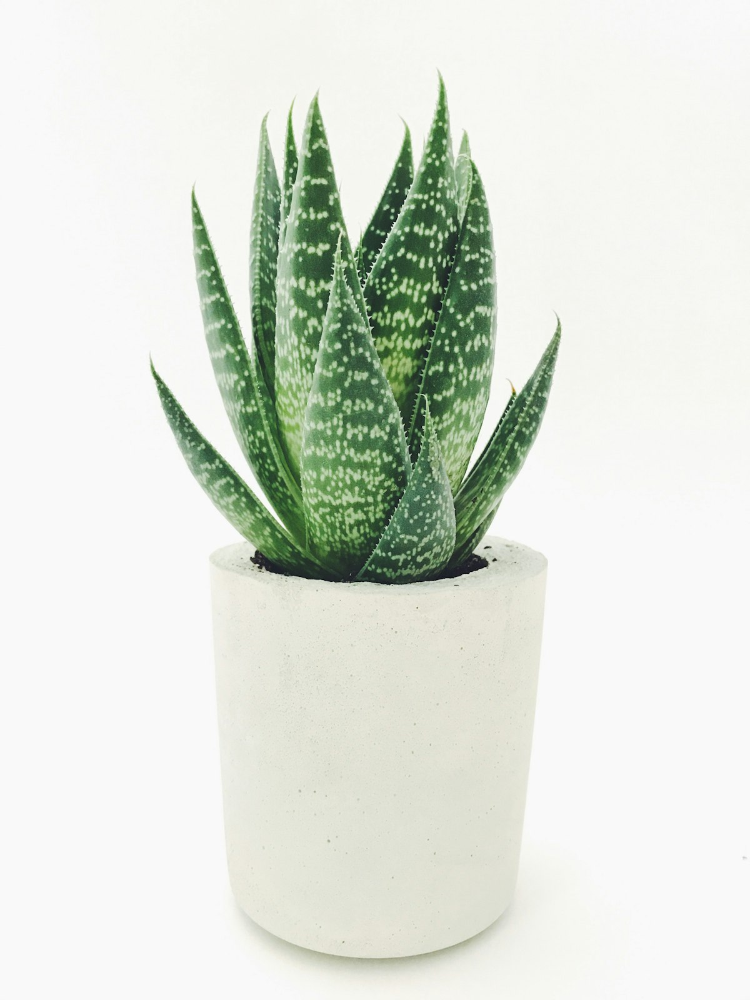

Babosa: para que serve e como é usada tradicionalmente

Presente em quintais e vasos de janela, a babosa (Aloe vera) carrega gerações de uso caseiro. Reunimos o que se sabe sobre a planta, seus usos mais populares e os cuidados que valem a pena ter antes de usá-la.
O gel transparente encontrado no interior das folhas é a parte mais usada da planta. Rico em água, ele é tradicionalmente aplicado na pele e nos cabelos como parte de rotinas caseiras de hidratação — um hábito que atravessa culturas diferentes ao redor do mundo.
Vale lembrar que "uso tradicional" não é sinônimo de comprovação científica para todo fim. Parte dos benefícios populares da babosa tem respaldo em estudos preliminares; outros ainda dependem de mais pesquisa. Por isso, tratá-la como cuidado complementar — e não como substituto de tratamento médico — é o caminho mais seguro.
Antes de usar: faça um teste em uma pequena área da pele e aguarde 24h para verificar reação alérgica. Gestantes, lactantes e pessoas com pele sensível ou ferimentos devem consultar um médico ou dermatologista antes de usar a babosa.
Cinco usos populares da babosa
-
Hidratação da pele
O gel é usado como hidratante caseiro em áreas ressecadas, geralmente aplicado puro ou combinado a outros ingredientes naturais.
-
Cuidado com os cabelos
Aplicado no couro cabeludo ou nas pontas, é usado tradicionalmente para deixar os fios com aspecto mais macio.
-
Máscaras caseiras
Costuma entrar em receitas de máscara facial junto a outros ingredientes, como parte da rotina de skincare caseiro.
-
Alívio após exposição ao sol
O gel gelado é popularmente usado para uma sensação de frescor na pele após dias muito quentes — sem substituir protetor solar ou cuidado médico em casos de queimadura.
-
Planta ornamental de fácil cuidado
Além do uso cosmético, a babosa é popular como planta de vaso: exige pouca água e se adapta bem a ambientes internos com luz indireta.
"Tradição popular e evidência científica nem sempre andam no mesmo ritmo — vale aproveitar uma com respeito pela outra."
Como extrair o gel com segurança
Corte uma folha próxima à base, deixe escorrer a seiva amarelada (látex) por alguns minutos — ela pode irritar a pele de algumas pessoas — e só então retire a polpa transparente de dentro da folha. Lave bem antes de usar e prefira preparar pequenas quantidades por vez, já que o gel fresco se conserva por pouco tempo na geladeira.
Como em qualquer cuidado natural, a resposta da pele varia de pessoa para pessoa. Prestar atenção aos sinais do próprio corpo é a melhor forma de saber se um hábito faz sentido para você.
Continue por aqui
Quer conhecer outras plantas usadas em cuidados caseiros?
Preparamos um guia com mais detalhes sobre cultivo, extração do gel e receitas caseiras com babosa.
Continuar lendo